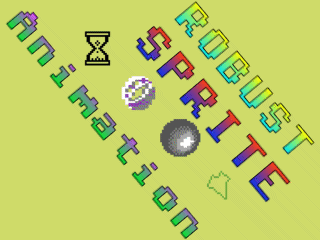
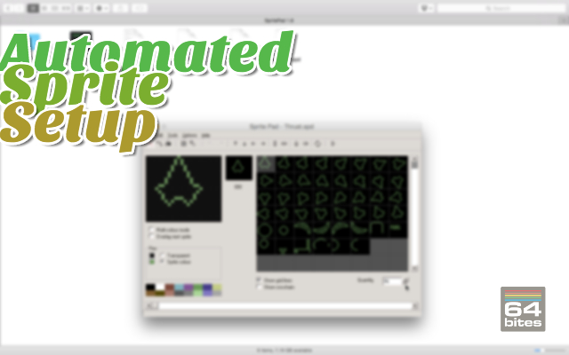
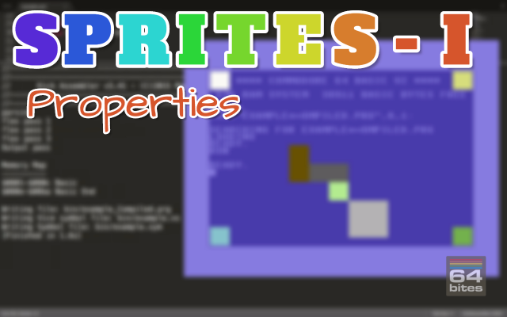

Episode #031 - Using the SpritePad
This time, instead of programming, we'll learn to use one of the most popular sprite editors - the SpritePad.It allows you to create multicolor and hires sprite bitmaps in a much more convenient way that specifying them bit by bit in your source code.
Watch the video
Download show notes
Click on the button below to get the full transcript, source code and programming exercises.
This way you follow along while watching the episode.
You will not only understand what is happening but also code everything yourself!
Download show notesBy the way. This episode is part of a Season 4. So you can get it in a bundle with 8 other episodes.
You can read more about that below
Season 4 - Sprites Setup and Animation

Here's what you will get
- 9 videos (50+ minutes in total)
- transcripts (13000+ words)
- source code examples (10000+ LOC)
- access to 64bitesVIP Facebook group, where you can get help
- plenty of exercises to solve on your own
- online streaming
- download with no DRM
- one time payment (no monthly/annual fees)
You WILL learn following:
- How to setup Sprite properties to display 8 hardware accelerated bitmaps
- Define high-resolution and multicolor sprites in your code
- Use SpritePad application to design static and animated sprites
- Import binary files with sprite definitions in your program
- Animate Sprites in Assembly
- Optimize memory usage with Run-Length Encoding algorithm
- Use compilation time metaprogramming to easily parse any binary file format.
- Overlay technique that allows you to combine hi-res with multicolor mode.
All Episodes in this Season

Episode #036 - Robust Animations
If you solved exercises from the previous episode, you should already have a robust program that can animate sprites of any type exported from the sprite pad.Today we will analyse one of possible solutions.

Episode #035 - Automated Sprite Setup
In the previous episode, we've seen how to optimize the memory usage of the sprite animation with a technique called run-length encoding. It allowed us to keep only a unique subset of all bitmaps in the memory. In effect, we managed to shave off almost 2KB of RAM.But we needed to calculate indices and repetition counts of unique frames by hand. Today we will use the compilation time metaprogramming to automate that process.

Episode #034 - Optimizing Animations
In this episode, we'll see how to compress duplicated sprite bitmaps without any visual changes to the animation.
Episode #033 - Sprite Animation
On top of creating bitmaps for use in static sprites, SpritePad allows us to create series of images that can be animated in our program.Today we will learn how to load and animate exported sprites.

Episode #032 - Importing SpritePad Files
In the previous episode we've used the SpritePad application to design four different sprites. We have also exported them into binary files in two formats. The native spritepad one and the SEUCK format that can be also used in the Shoot'Em Up Construction Kit.Today we will learn how to import the sprites from the file into an assembly program.

Episode #031 - Using the SpritePad
This time, instead of programming, we'll learn to use one of the most popular sprite editors - the SpritePad.It allows you to create multicolor and hires sprite bitmaps in a much more convenient way that specifying them bit by bit in your source code.

Episode #030 - Sprites III - Multicolor Bitmaps
If we take a look at a sprite bitmap, and treat each pixel as it was defined by a pair of bits.The displayed image grid would now only be 12 by 21 pixels. But each of them could be in one of four possible states...
Or colors!

Episode #029 - Sprites II - Hires Bitmaps
As we already know, sprites are a 24 by 21-pixel bitmaps. But default ones are just filled rectangles. In this episode we will learn how to redefine sprite bitmaps to make them more interesting. 